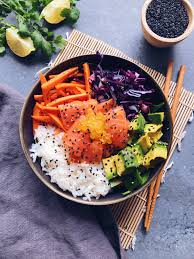

des recettes de quoi raviver vos papilles hihi!!
1)poke bowl
 cliquer ici pour voir le tuto2)toast avovat
 Ingredients clique ici
Ingredients clique ici
3)riz cantonnais
 Ingredients clique ici
Ingredients clique ici
source="https://clemfoodie.com/2018/03/06/poke-bowl/" source="https://www.marmiton.org/recettes/recette_toasts-a-l-avocat_71503.aspx"
source="https://youcookcuisine.com/recette/riz-cantonais/"